About Me
I am currently a postdoctoral research fellow at S-Lab in Nanyang Technological University, working with Prof. Weisi Lin. I received my Ph.D. degree from Dept. of Computer Science at the University of Hong Kong in January 2021. I did my Ph.D. research at Computer Vision Lab in HKU, advised by Dr. Kenneth K.Y. Wong. Prior to studying at HKU, I received my B.Eng. from Huazhong University of Science and Technology.
My interests are centered around Computer Vision and Deep Learning. Current research topics include:
- Low level vision, including image quality assessment, restoration and enhancement.
- Image-to-image translation
- 3D-aware image synthesis/rendering/editing
- Face related tasks
News
- ⭐ Use
pip install pyiqato try our PyTorch toolbox for Image Quality Assessment.
- 2023-09: We release Q-Bench, a systematic benchmark for multi-modality LLMs (MLLMs) on low-level vision and visual quality assessment.
- 2023-09: Extension of FAST-VQA (FasterVQA) get accepted by TPAMI.
- 2023-07: One paper about video quality assessment is accepted by ACM MM 2023.
- 2023-07: One paper about video quality assessment is accepted by ICCV 2023.
- 2023-03: One paper about video quality assessment is accepted by ICME 2023.
- 2023-02: One paper about video quality assessment is accepted by TCSVT 2023.
- 2022-12: One paper about video prediction is accepted by AAAI 2023.
- 2022-11: Our research team, NTU Visual Quality Assessment Group is created, which aims to build efficient and explainable Visual Quality Assessment approaches.
- 2022-09: One paper is accepted by NeurIPS 2022.
- 2022-07: Three papers have been accepted by ECCV2022.
- 2022-06: Two papers, including QuanTexSR (renamed as FeMaSR) have been accepted by ACM MM2022.
- 2022-06: One paper, FFRNet about masked face recognition has been accepted by ICIP2022.
- 2022-03: We release our work about blind image resolution, QuanTexSR, together with the codes in Github.
- 2022-02: We release a PyTorch toolbox for IQA
.
- 2021-07: One paper about HDR video reconstruction is accepted by ICCV 2021.
- 2021-03: Our paper PSFR-GAN about face SR has been accepted by CVPR2021.
- 2020-11: Our paper SPARNet about face SR has been accepted by TIP2020.
Experience
| Sep 2021 - Present | Postdoctoral research fellow at S-Lab in NTU, working with Prof. Weisi Lin |
| Mar 2021 - Aug 2021 | Research Assistant at GAP Lab CUHKSZ, worked with Dr. Xiaoguang Han |
| Nov 2019 - Mar 2021 | Research Intern at Alibaba DAMO Academy, worked with Prof. Lei Zhang and Dr. Xiaoming Li |
| May 2019 - Oct 2019 | Research Visitor at VLLab UC Merced, worked with Prof. Ming-Hsuan Yang | Jun 2018 - Mar 2019 | Research Intern at Tencent AI Lab, worked with Prof. Zhifeng Li and Dr. Dihong Gong |
Publications
( * equal contribution.)Preprints
| 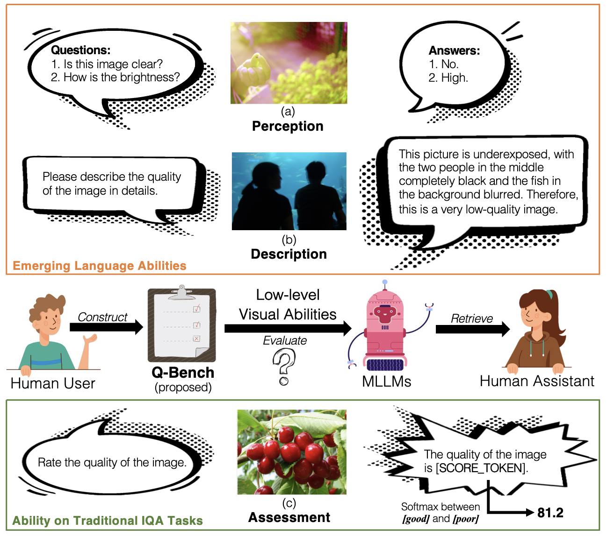 |
Q-Bench: A Benchmark for General-Purpose Foundation Models on Low-level Vision |
|
arXiv, 2023 |
|

|
| 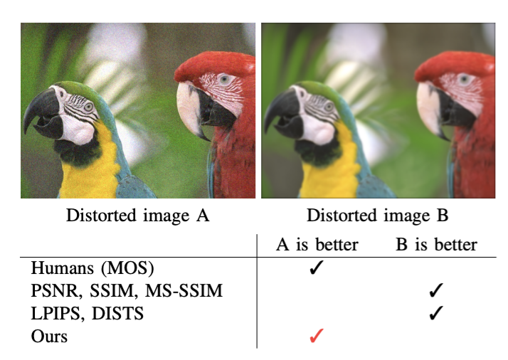 |
TOPIQ: A Top-down Approach from Semantics to Distortions for Image Quality Assessment |
|
arXiv, 2023 |
|

|
Conference Proceedings
| 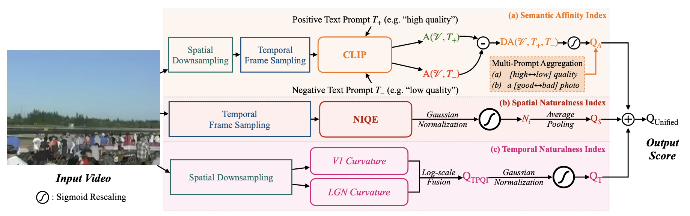 |
Exploring Opinion-Unaware Video Quality Assessment with Semantic Affinity Criterion |
|
IEEE International Conference on Multimedia and Expo (ICME), 2023 |
|

|
| 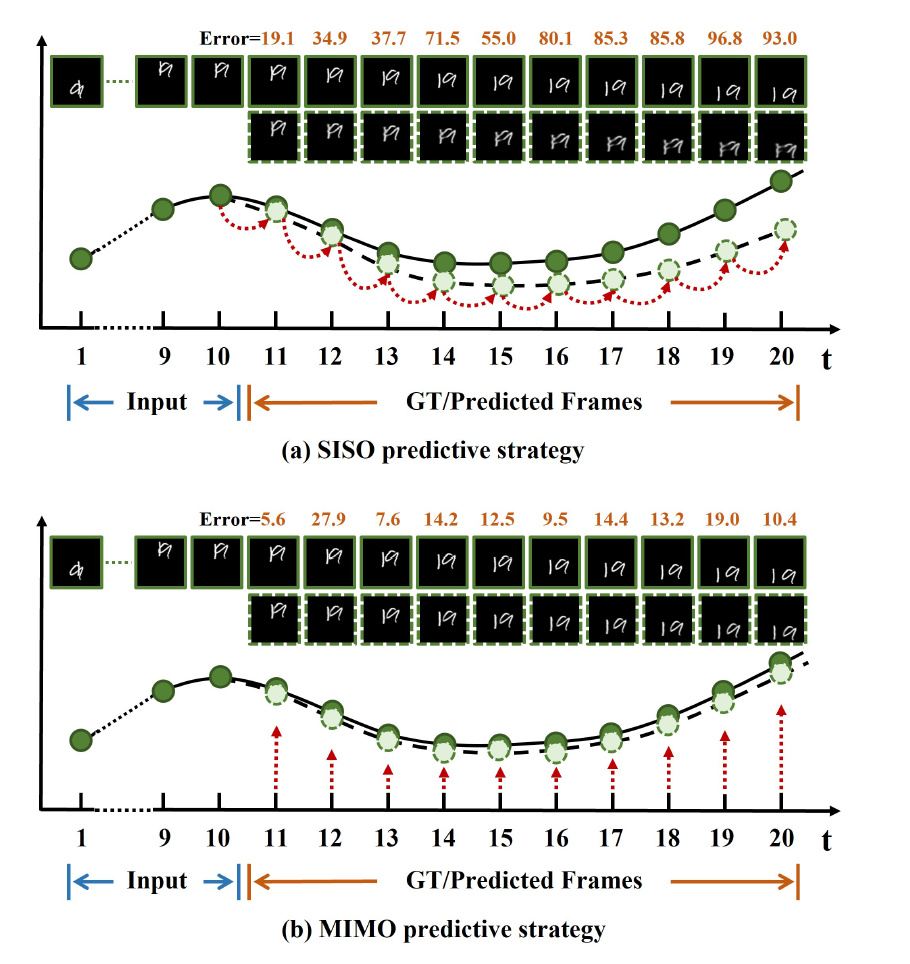 |
MIMO Is All You Need: A Strong Multi-In-Multi-Out Baseline for Video Prediction |
|
Association for the Advancement of Artificial Intelligence (AAAI), 2023 | |
|
|

|
S3-NeRF: Neural Reflectance Field from Shading and Shadow under a Single Viewpoint |
|
Conference on Neural Information Processing Systems (NeurIPS), 2022 | |

|
| 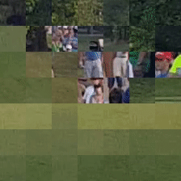 |
FAST-VQA: Efficient End-to-end Video Quality Assessment with Fragment Sampling |
|
European Conference on Computer Vision (ECCV), 2022 | |

|
| 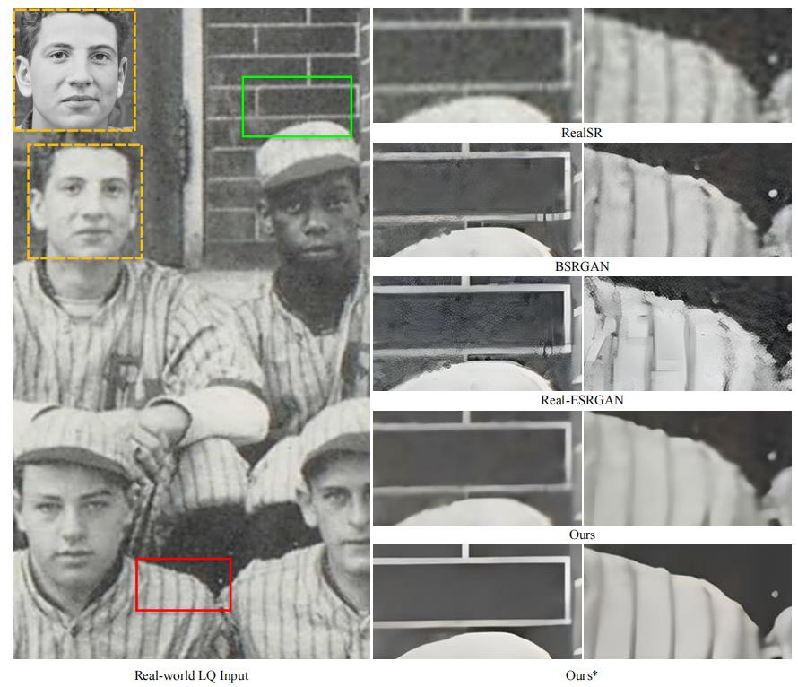 |
From Face to Natural Image: Learning Real Degradation for Blind Image Super-Resolution |
|
European Conference on Computer Vision (ECCV), 2022 | |

|
| 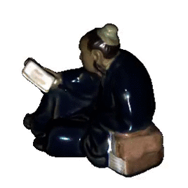 |
PS-NeRF: Neural Inverse Rendering for Multi-view Photometric Stereo |
|
European Conference on Computer Vision (ECCV), 2022 | |

|
| 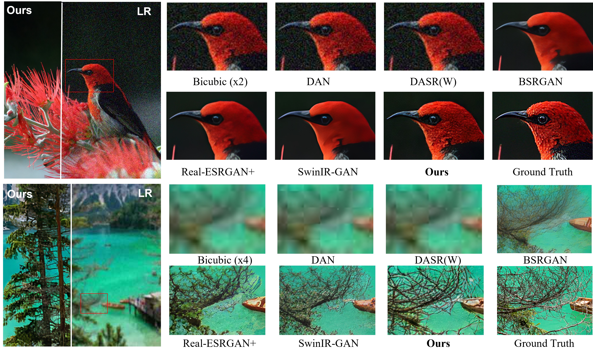 |
Real-World Blind Super-Resolution via Feature Matching with Implicit High-Resolution Priors |
|
ACM Multimedia, 2022 (Oral Presentation) | |

|
| 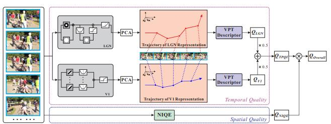 |
Exploring the Effectiveness of Video Perceptual Representation in Blind Video Quality Assessment |
|
ACM Multimedia, 2022 (Oral Presentation) | |

|
| 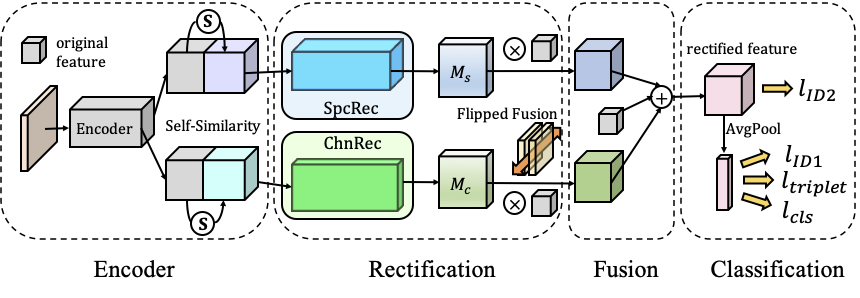 |
A Unified Framework for Masked and Mask-Free Face Recognition via Feature Rectification |
|
ICIP, 2022 | |

|
| 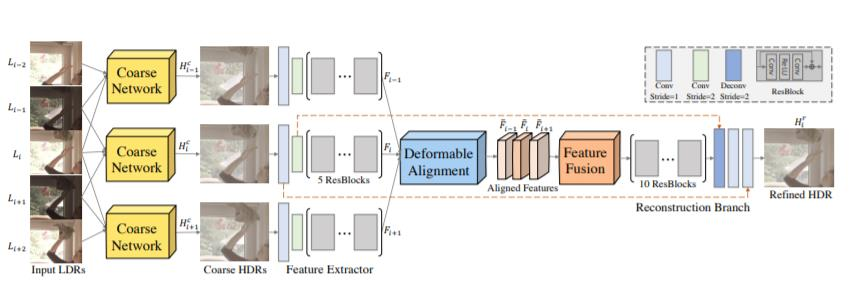 |
HDR Video Reconstruction: A Coarse-to-fine Network and A Real-world Benchmark Dataset |
|
International Conference on Computer Vision (ICCV), 2021 | |

|
| 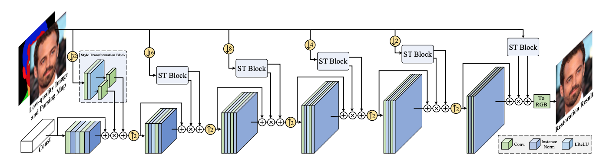 |
Progressive Semantic-Aware Style Transformation for Blind Face Restoration |
|
Computer Vision and Pattern Recognition (CVPR), 2021 | |

|
| 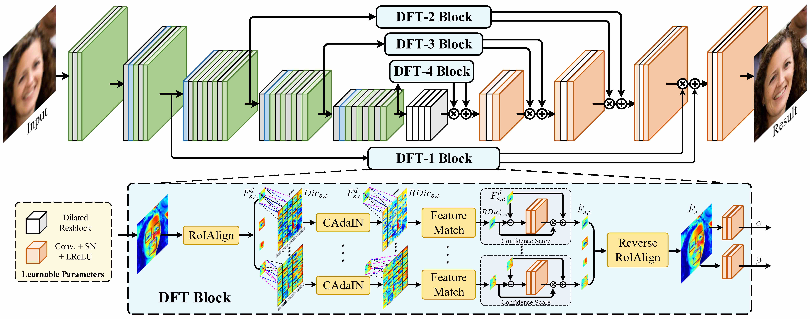 |
Blind Face Restoration via Deep Multi-scale Component Dictionaries |
|
European Conference on Computer Vision (ECCV), 2020 | |

|
| 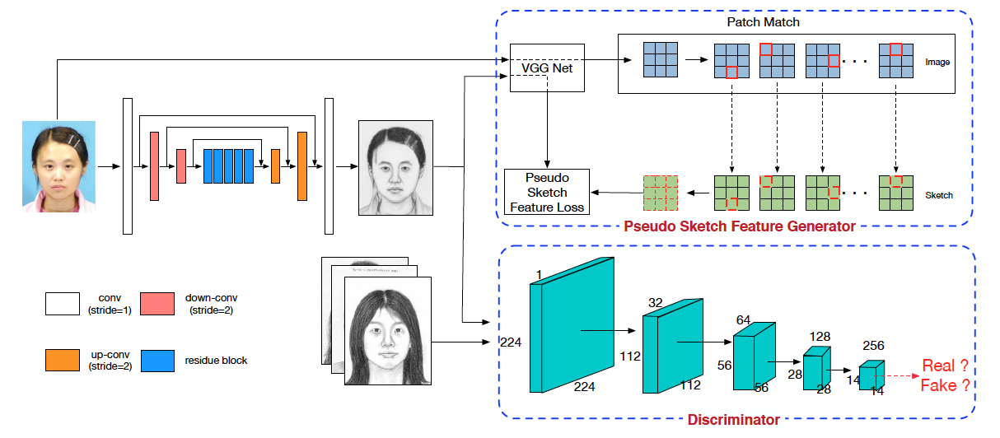 |
Semi-Supervised Learning for Face Sketch Synthesis in the Wild |
|
Asia Conference on Computer Vision (ACCV), 2018 | |

|
| 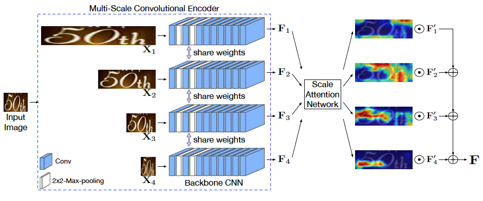 |
SAFE: Scale Aware Feature Encoder for Scene Text Recognition |
|
Asia Conference on Computer Vision (ACCV), 2018 | |
|
|
| 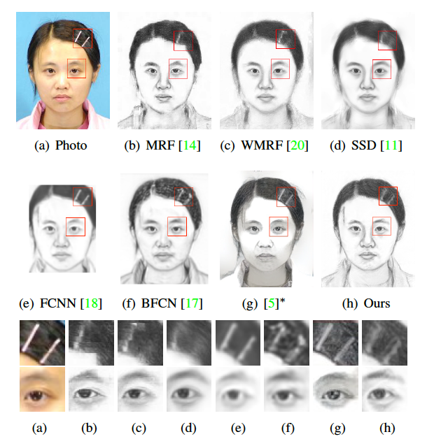 |
Face Sketch Synthesis with Style Transfer using Pyramid Column Feature. |
|
IEEE Winter Conference on Applications of Computer Vision (WACV), 2018 | |

|
| 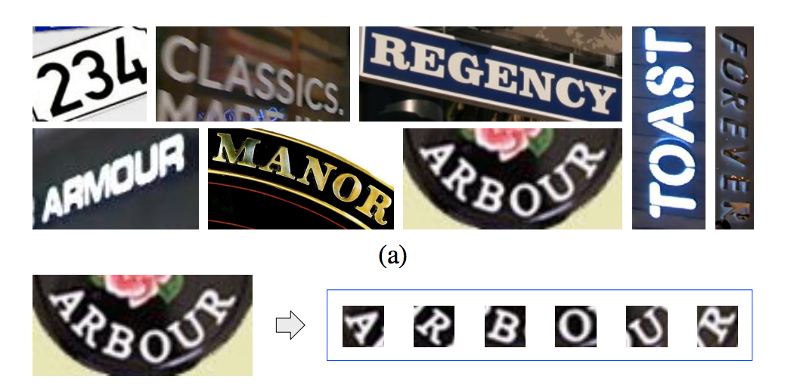 |
Char-Net: A Character-Aware Neural Network for Distorted Scene Text Recognition |
|
AAAI Conference on Artificial Intelligence (AAAI), 2018 (Oral Presentation) | |
| PDF PPT |
| 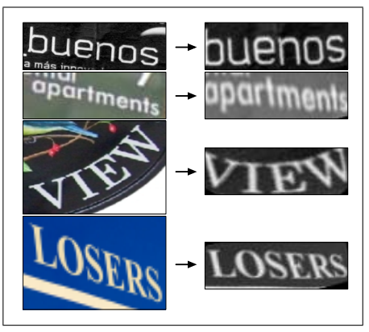 |
STAR-Net: A SpaTial Attention Residue Network for Scene Text Recognition. |
|
British Machine Vision Conference (BMVC), 2016 | |
Academic Journals
| 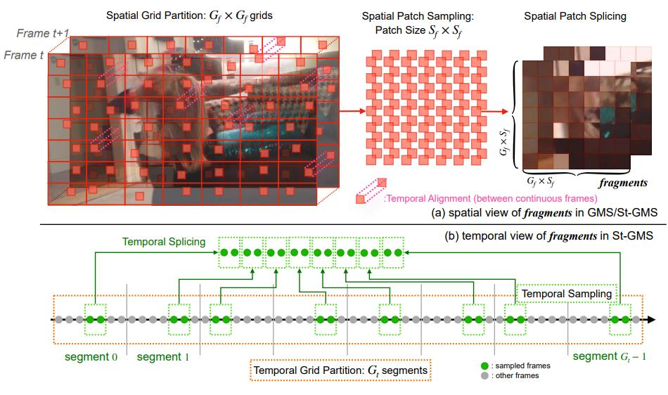 |
Neighbourhood Representative Sampling for Efficient End-to-end Video Quality Assessment. |
|
IEEE Transactions on Pattern Analysis and Machine Intelligence, 2023 | |

|
| 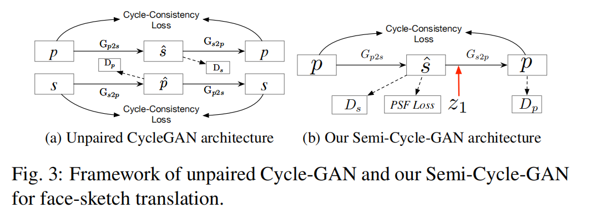 | Semi-supervised Cycle-GAN for face photo-sketch translation in the wild |
Computer Vision and Image Understanding (CVIU), 2023. (ACCV extension) |
|
[DOI]

|
| 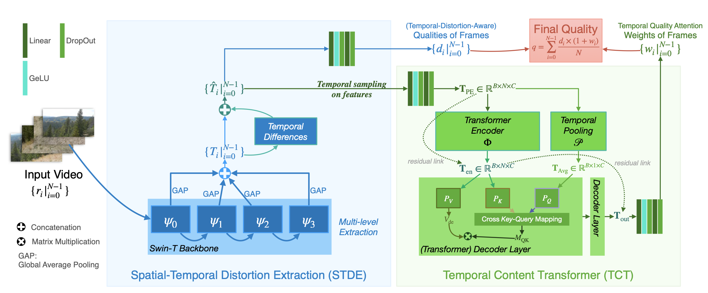 |
DisCoVQA: Temporal Distortion-Content Transformers for Video Quality Assessment |
|
IEEE Transactions on Circuits and Systems for Video Technology (TCSVT), 2023 | |

|
| 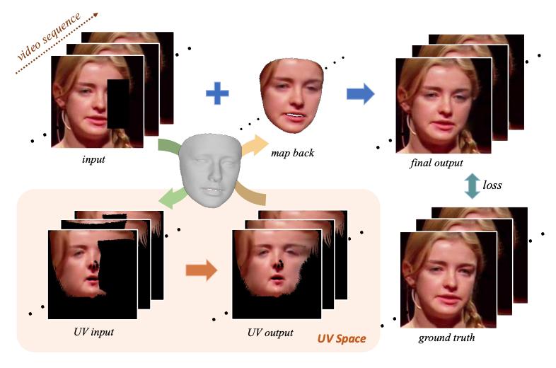 |
Deep Face Video Inpainting via UV Mapping |
|
IEEE Transactions on Image Processing (TIP), 2023 | |
|
|
| 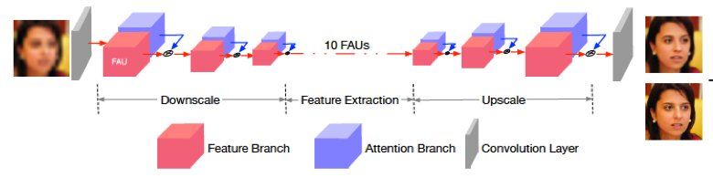 |
Learning Spatial Attention for Face Super-Resolution |
|
IEEE Transactions on Image Processing (TIP), 2020 | |

|
PhD Dissertation
|
|
Face Sketch Synthesis and Face Super Resolution in the Wild with Deep Learning |
|
Dept. of Computer Science, The University of Hong Kong, 2020 | |
| HKU Theses Online |
Professional Activities
- Conference Reviewer:
- IEEE Conference on Computer Vision and Pattern Recognition (CVPR)
- International Conference on Computer Vision (ICCV)
- European Conference on Computer Vision (ECCV)
- Association for the Advancement of Artificial Intelligence (AAAI)
- ACM International Conference on Multimedia (ACM MM)
- Journal Reviewer:
- IEEE Transactions on Pattern Analysis and Machine Intelligence (TPAMI)
- IEEE Transactions on Image Processing (TIP)
- IEEE Transactions on Multimedia (TMM)
- IEEE Transactions on Circuits and Systems for Video Technology (TCSVT)
- Elsevier Journal of Neurocomputing (Neurocomputing)
Awards
- Hong Kong PhD Fellowship, HKU, 2015 - 2018
- National Scholarship, HUST, 2011 - 2012
Teaching
- [2017/18 2nd semester]: COMP3317 Computer Vision ~ Teaching Assistant
- [2015/16 2nd semester]: COMP2396 Object-Oriented Programming and Java ~ Teaching Assistant
- [2016/17 1st semester]: COMP2396 Object-Oriented Programming and Java ~ Teaching Assistant